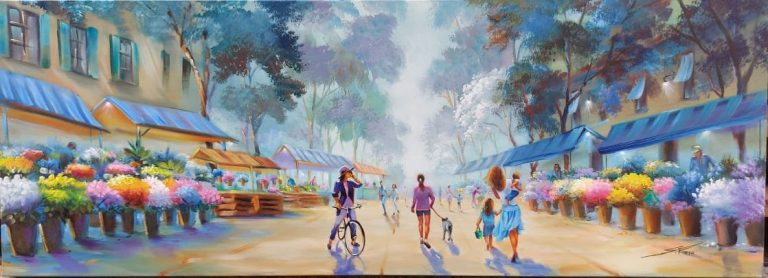
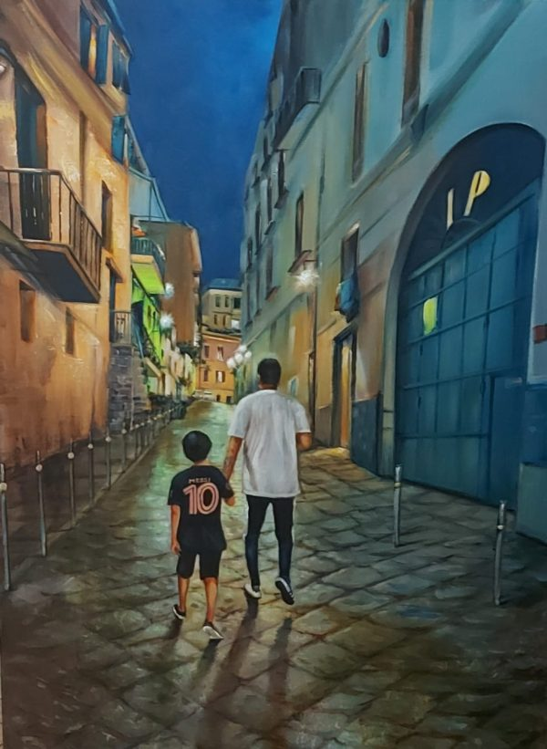
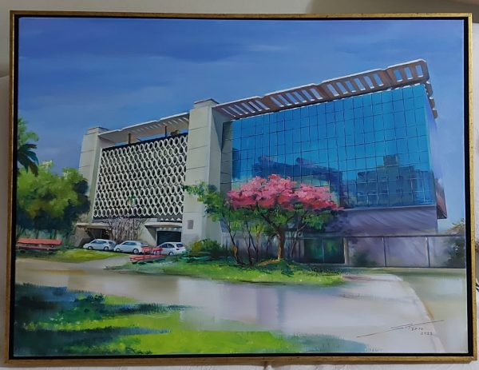

Taller en Porto Alegre · R. João Guimarães, 31 — Rio Branco
Catálogo › Mercado de flores

Obra de Silvia Porto
N.º 11 · Mercado de flores
Mercado de flores es una pintura original en acrílico de la artista Silvia Porto, de Porto Alegre (Brasil).
Una escena urbana llena de ambiente y memoria, perfecta para salones, recibidores y oficinas.
Encarga tu cuadro pintado a mano por Silvia, en acrílico sobre lienzo, en el tamaño que quieras (plazo mínimo de 15 días hábiles).
No hay venta online: Silvia confirma contigo el tamaño, el acabado, el precio y el plazo antes de empezar a pintar.
Atención directa con Silvia: (51) 99283-8195 · silviabeust1@gmail.com
Pruébalo
Mira el cuadro en tu pared
Elige un ambiente o sube la foto de tu pared para ver el tamaño justo.
Obras parecidas
 N.º 107 · Mercado en calle antigua
N.º 107 · Mercado en calle antigua N.º 106 · Calle florida con toldos
N.º 106 · Calle florida con toldos N.º 97 · Puerta azul con enredadera
N.º 97 · Puerta azul con enredadera
N.º 77 · Padre e hijo en la calle de noche
N.º 72 · Edificio de cristal y jardín N.º 55 · Paseo bajo la lluvia al atardecer
N.º 55 · Paseo bajo la lluvia al atardecer N.º 50 · Noche de lluvia en París
N.º 50 · Noche de lluvia en París N.º 20 · Canal de Venecia
N.º 20 · Canal de Venecia© 2026 Silvia Porto — Artes Plásticas · Porto Alegre, RSEncargos · WhatsApp (51) 99283-8195 · silviabeust1@gmail.comDesarrollado por Diego Kasper - +Cuadros